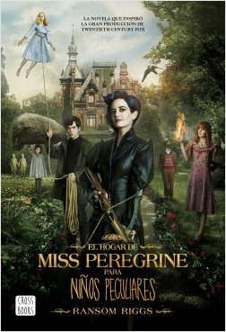
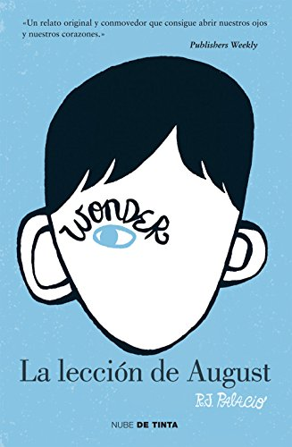
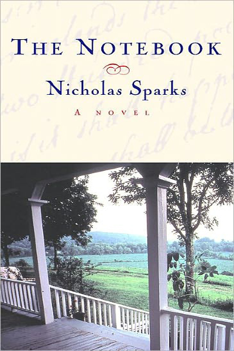
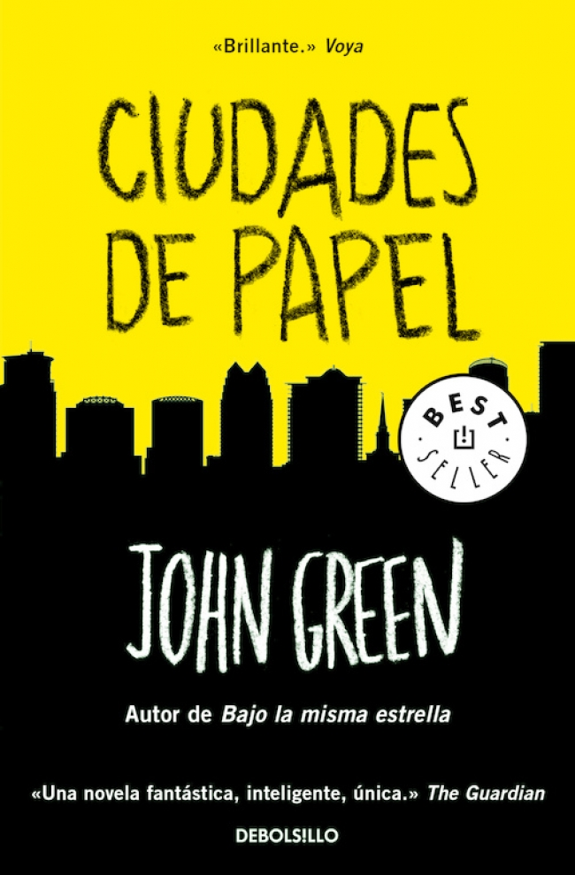
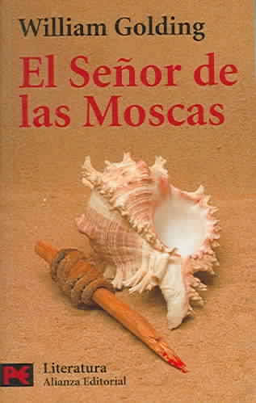
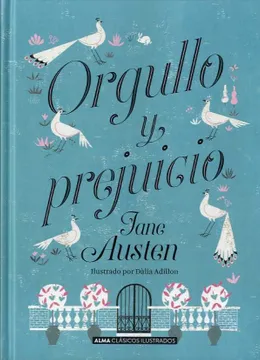
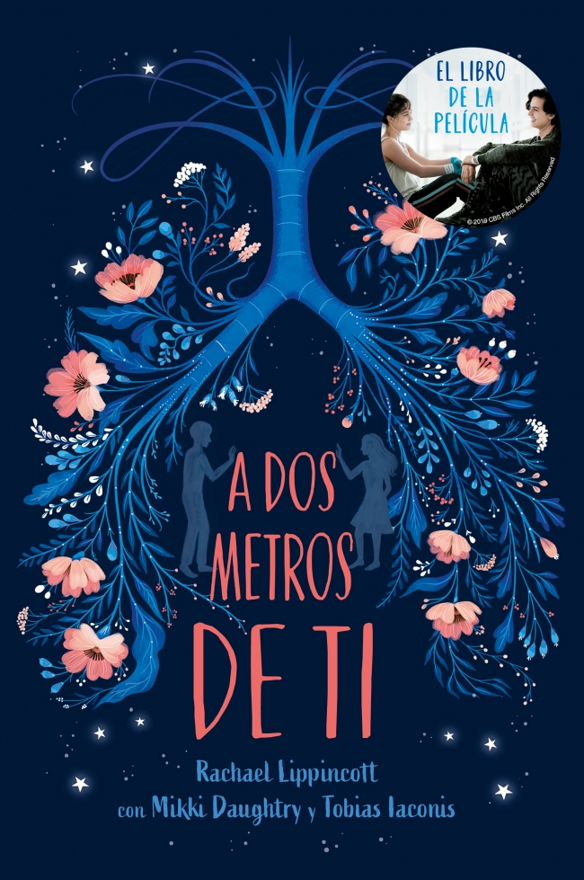
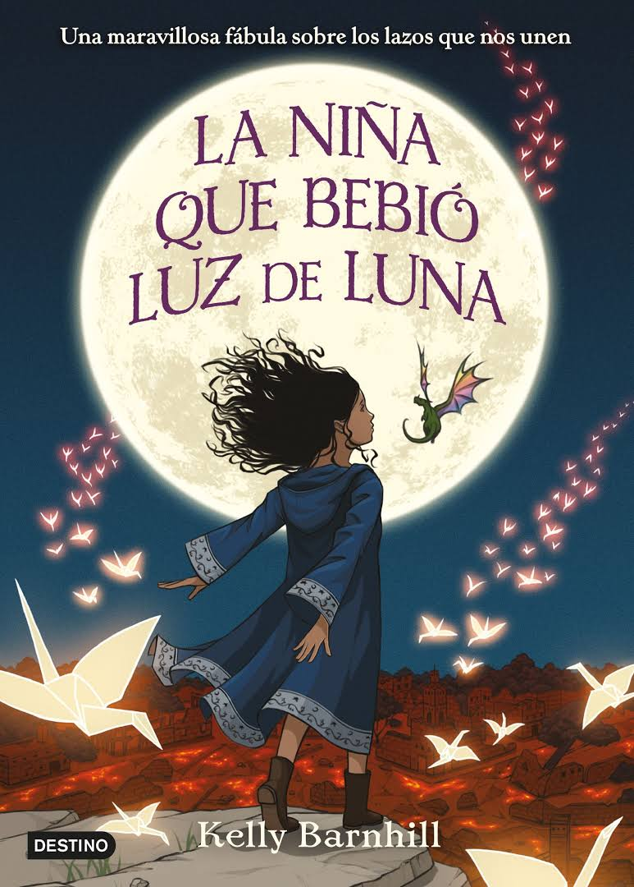

After
Autor:Anna Tod
Tessa Young acaba de llegar a la universidad, y su estable y ordenada vida da un giro busco al conocer al misterioso Hardin Scott, cuyo pasado es algo oscuro. Aunque de entrada se odian, estos polos opuestos se unirán y nada volverá a ser como antes. Tendrán que enfrentarse amultiples pruebas como la inocencia y el descubrimiento sexual, para poder estar juntos.
leer mas...
El Hogar de Miss Peregrine Para Niños Peculiares

Autor:Ramson Riggs
Mientras investiga un misterio que le legó su abuelo, un adolescente encuentra en la costa de Gales una isla en la que habitan niños con poderes especiales y terribles enemigos que los amenazan.
leer mas...
Mil Noches Sin Ti
Autor:Demetrio Ortiz
Tras un paréntesis en Rusia, para Sofia ha llegado el momento de poner orden a su vida sentimental. Ya no puede seguir huyendo de su pasado, de la soledad de su matrimonio, ni de la historia pasional y rota con Tancredi, y decide regresar a Roma. En un viaje a Sicilia para visitar a sus padres, descubrirá un secreto familiar que le afectará profundamente. Mientras tanto, Tancredi sigue todos sus pasos; es un hombre enamorado que nunca se ha rendido a la primera. Pero Sofía no confía en él... ¿Acabarán reencontrándose?
leer mas...
Bajo La Misma Estrella
Autor:John Green
A Hazel y a Gus les gustaría tener vidas más corrientes. Algunos dirían que no han nacido con estrella, que su mundo es injusto. Hazel y Gus son solo adolescentes, pero si algo les ha enseñado el cáncer que ambos padecen es que no hay tiempo para lamentaciones, porque, nos guste o no, solo existe el hoy y el ahora. Y por ello, con la intención de hacer realidad el mayor deseo de Hazel - conocer a su escritor favorito -, cruzarán juntos el Atlántico para vivir una aventura contrarreloj, tan catártica como desgarradora. Destino: Amsterdam, el lugar donde reside el enigmático y malhumorado escritor, la única persona que tal vez pueda ayudarles a ordenar las piezas del enorme puzle del que forman parte... Novela juvenil, su lectura está recomendada a partir de 14 años.
leer mas...
20 comentarios
Wonder: La Leccion de August

Autor:Raquel Palacio
Auggie Pullman es un niño de 10-11 años que nació con el Síndrome de Treacher Collins, un trastorno genético caracterizado por malformaciones craneofaciales. Sus padres lo sobreprotegen y lo tratan como a un niño pequeño, lo que hace que algunas veces, su hermana mayor, Olivia, se sienta desplazada.
leer mas...
The Notebook

Autor:Nicholas Sparks
La historia se remonta al verano de 1940 en Seabrook, Carolina del Sur. Allie Hamilton (Rachel McAdams) es una chica de una familia rica que pasa el verano en Seabrook. En el carnaval, Allie conoce a Noah Calhoun (Ryan Gosling), un joven del pueblo que trabaja en la fábrica de madera. Aunque al principio Allie no se interesa por él, Noah insiste en que pasen tiempo juntos y es así como él y Allie se enamoran.
leer mas...
Ciudades de Papel

Autor:John Green
“Buscando a Alaska” relata la historia de los jóvenes y sus aventuras dentro del internado, donde se sienten muy afectados por la trágica muerte de su amiga Alaska, quien vive el sufrimiento de la muerte de su madre, el cual la conduce a su propia muerte.
leer mas...
El Señor De Las Moscas

Autor:William Golding
El señor de las moscas cuenta la historia de un grupo de chicos británicos cuyo avión ha chocado en una isla desierta en el Océano Pacífico. (Parece que hay una guerra en el mundo, lo cual importará luego.) Sin adultos, los chicos tienen que cuidarse y organizarse.
leer mas...
Divergente
Autor:Veronica Roth
En una sociedad futura, la gente está dividida entre facciones basadas en sus personalidades. Después de que una joven descubre que ella es una Divergente y nunca será de algún grupo, descubre un complot para destruir a quienes con como ella.
leer mas...
Orgullo Y Prejuicio

Autor:Jane Austen
Es una novela de desarrollo personal, en la que las dos figuras principales, Elizabeth Bennet y Fitzwilliam Darcy, cada uno a su manera y, no obstante, de forma muy parecida, deben madurar para superar algunas crisis y aprender de sus errores para poder encarar el futuro en común, superando el orgullo de clase de Darcy y los prejuicios de Elizabeth hacia él.
leer mas...
Cuando Nos Volvamos A Encontrar
Autor:Andrea Rodriguez
Él tenía 19 años cuando le diagnosticaron leucemia. Le plantó cara a la enfermedad, vivió cada día como si fuera el último y batió un récord al conseguir un máximo histórico de donantes de médula al movilizar a miles de personas con sus redes sociales. Él miró de frente a la muerte sacándole lo mejor a la vida.
leer mas...
A Dos Metros De Ti

Autor:Rachel Lippincott, Tobias Laconis, Mikki Daughty
Stella, de 17 años, está ingresada en un hospital porque padece fibrosis quística. Su monótona existencia cambia cuando llega Will, un adolescente con la misma dolencia. Sin embargo, las normas del hospital prohíben el contacto entre ellos.
leer mas...
La Niña Que Bebio Luz De Luna

Autor:Kelly Barnhill
Cada aano, las personas del Protectorado dejan un bebae como ofrenda a la bruja que vive en el bosque. Esperan que este sacrificio evite que aterrorice a su pueblo. Pero la bruja en el bosque, Xan, es amable y gentil. Ella comparte su hogar con un sabio Monstruo del pantano llamado Glerk y un Dragaon Perfectamente Diminuto, Fyrian. Xan rescata a los nianos abandonados y los entrega a familias de acogida al otro lado del bosque, alimentando a los bebaes con la luz de las estrellas en el viaje.
leer mas...